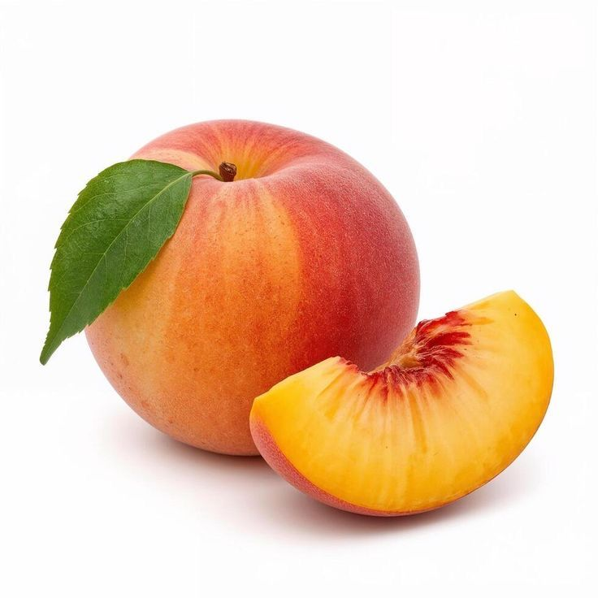

Nectarine

| Index |
|---|
| Short description |
| Nutritional value |
| Health benefits |
| Best time to eat |
| Who shoud avoid |
| Fun fact |
Short Description
Nectarine is a smooth-skinned fruit closely related to peaches. It has a sweet and slightly tangy flavor and is commonly eaten fresh or used in desserts.
Nutritional Value
| Nutrient | Amount |
|---|---|
| Calories | 44 kcal |
| Carbohydrates | 11 g |
| Dietary Fiber | 1.7 g |
| Vitamin C | 9% |
| Potassium | 201 mg |
| Vitamin A | Present |
Health Benefits
- Improves digestion
- Supports skin health
- Boosts immunity
- Supports heart health
- Low-calorie fruit for weight control
Best Time to Eat
Nectarines are best eaten during the daytime, preferably as a snack.They are light and easy to digest.
Avoid eating nectarines:
- On an empty stomach if you have acidity
- Late at night
Who Should Avoid
- People allergic to stone fruits
- Those with sensitive stomachs
- People with acidity, if eaten in excess
Fun Fact
- Nectarines are actually peaches without fuzz
- They naturally developed from peaches
- Nectarines are rich in water content